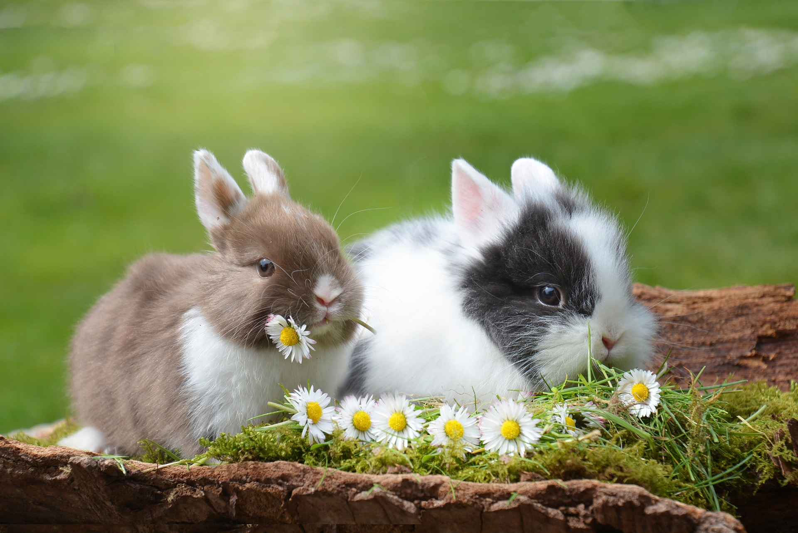

Rabbit Guide
Rabbits make excellent pets, just like our most common pets "cats & dogs" they come in all sorts of colors and sizes. They require certain conditions to keep them happy and healthy. This guide will help you learn all about rabbits, so you and your family can get the most enjoyment out of your pet rabbit.
Would a rabbit make a good pet
When considering a rabbit for a pet, understand your signing up for a long-term commitment. While the average lifespan of a pet rabbit is, according to the House Rabbit Society, about eight to 14 years old, certain breeds of rabbits are known to live longer than others. Just like you may have heard about dogs, smaller rabbits dwarf or mini lops typically live longer than the larger breeds like French lops and Flemish giants.
"By caring for an animal, children learn to consider the needs of others," says Animal Behaviourist Laura Vissaritis. "Children aged six and older are generally able to take responsibility and show empathy, making the experience much more valuable."
- They don't need much room - unlike other pets, rabbits are happy in their cage during the day with a little roaming-around time at night.
- "Rabbits can be very affectionate and they are generally clean, easy to toilet train and love to explore," says Laura.
- Some people who are allergic to cats and dogs find they're fine (and sniffle-free) around bunnies.
- They're quieter than an elevator full of strangers; if you live in apartment where noise is a problem, a rabbit could be the answer.
- Bunnies can live indoors and can even be taught to use a litter tray (although if you plan to keep them outside, a secure enclosure is essential to protect them from predators).
- Their droppings are relatively smell- and mess-free. Bonus.
Pet rabbit challenges
Parents, please consider that some breeds grow quite large. Ask about how big the adult gets before your purchase, or consider a smaller breed. Male rabbits should be de-sexed to avoid territorial behavior and females should be spayed to prevent illnesses and accidental breedings. Rabbits have a need to constantly chew, their teeth never stop growing. It's highly recommended to have a piece of wood in their encloser. Always remember they're more fragile than cats or dogs, so when handling makes sure to be firm but gentle.